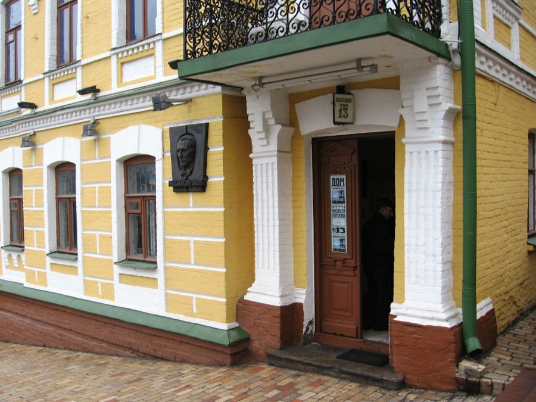
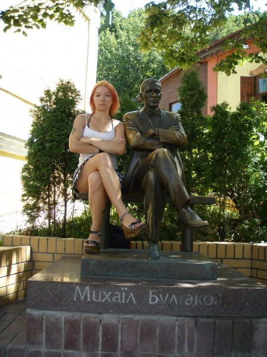
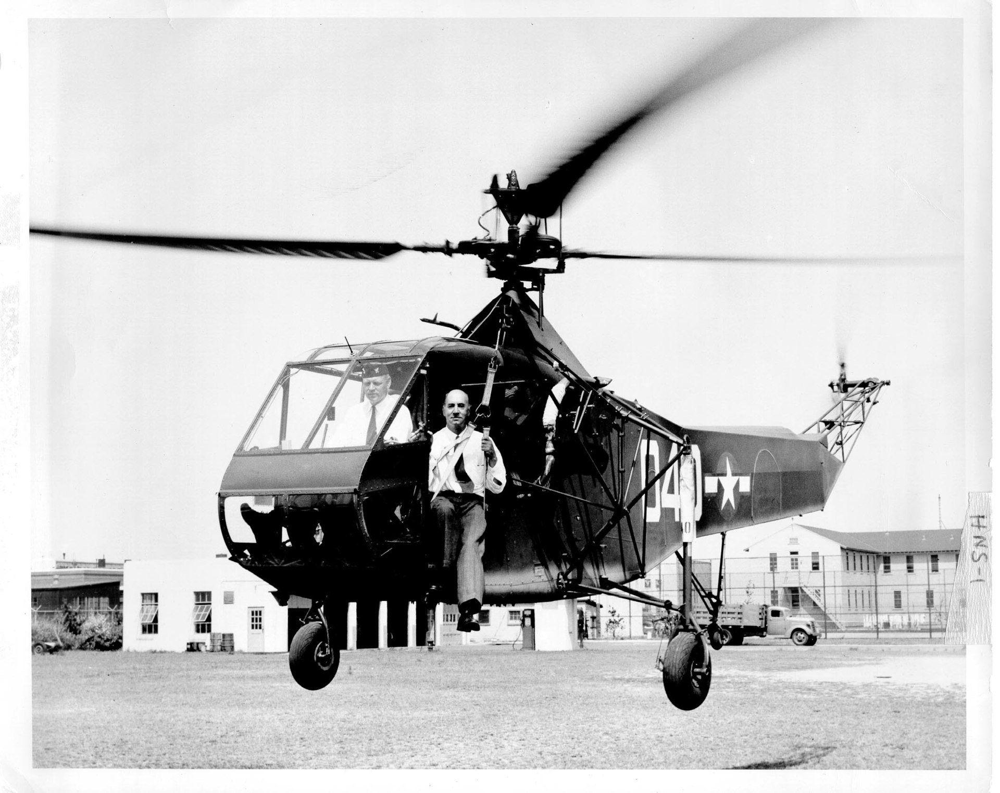
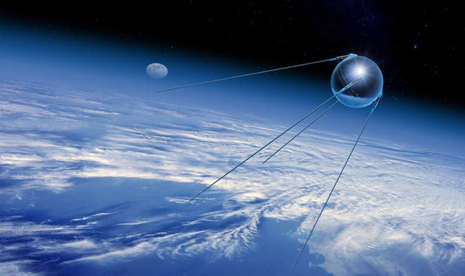
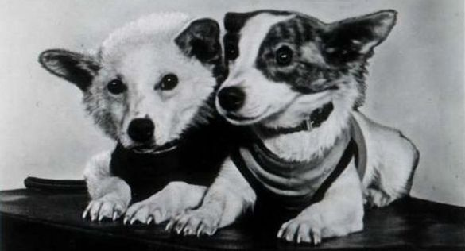
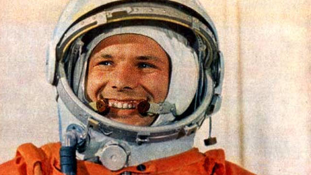

🇺🇦 Ukraine 🇺🇦
🌾 One of the biggest grain exporters in the world 🌾
🌻 And the biggest exporter of the sunflower oil 🌻
Chernozem (Black Earth)
General facts
- Capital: Kyiv (population around 2.9M)
- Area: 603km2 (the largest country entirely in Europe)
- Population: around 45M
- Language: Ukrainian (although we can speak and understand Russian)
- Has mountains and seas, lots of rivers and lakes
Carpathian Mountains
Seas
History
Early Paleolithic (1M years ago – 150th. BC.)

Kiev Rus (9th-13th century)

Kyiv (V century - 482y.)
One of the oldest cities of Eastern Europe

Fighting for freedom
Mongol-Tatar invasion (Golden Horde) in 1237
Lasted 238 years!

Everyone wants a piece of Ukraine
- Lithuania
- Poland
- Hungary
- Moldova
- Russia
- ...
Managed to be independent
During one year in 1917
Ukrainian Soviet Socialist Republic 1922-1991

Still fighting for freedom
2013-...
Maidan

Maidan

Maidan

Maidan

Maidan

The fight continues
Chernobyl 26.04.1986
Soviet Woodpecker 🕵
Soviet over-the-horizon (OTH) radar system, was a part of the Soviet anti-ballistic missile early-warning network. Located near Chernobyl
Designated on the map as a children summer camp
Fun facts
Mikhail Bulgakov
Was actually ukrainian
Mikhail Bulgakov
Ukrainian Drug

Yes, it is a pork fat
It's f#$%$^g deep!
Arsenalna station - 105.5 metres below ground

Lviv - coffee capital

Mighty soviet relic
Mother Motherland 62m tall

Inventions and famous people
Everyone knows this one
And these ones
Ivan Puluj (1845-1918)
Discovered X-Ray before Wilhelm Conrad Röntgen
Igor Sikorsky (1889-1972)
Created the first mass-produced 🚁
1942

Sergei Korolev (1907-1966)
The first artificial Earth satellite
4 October 1957

The first two dogs in space
19 August 1960

the first human in space
12 April 1961 (Yuri Gagarin)

Let's talk a bit about cargo
The largest airplane in the world - Antonov An-225, Mriya
- Maximum takeoff weight - 640 tons
- Maximum load weight - 285 tons
- Costs from $200 000 000 to $250 000 000 to produce
- Single copy
- This year was used to deliver some oversized stuff for Space X to Cape Canaveral
Culture
Celebrations
Ukrainians love to celebrate.

We celebrate New Year twice
Christmas is much more traditional
Ivana Kupala
Ivana Kupala
Wedding…
- Bride probably will be stolen
- Wedding bread is much more important than wedding cake;
- Celebration can last more than a few days;
Vyshyvanka
There was one specific music genre which
often keeps being forgotten — duma.
There is at least one Ukrainian song,
that almost everybody know…
And there are some more faces
you may have seen somewhere
Andy Warhol (Andrew Warhola)
Leonard Nimoy
Milla Jovovich
Mila Kunis
And many others, really.
Depends, how to count :)